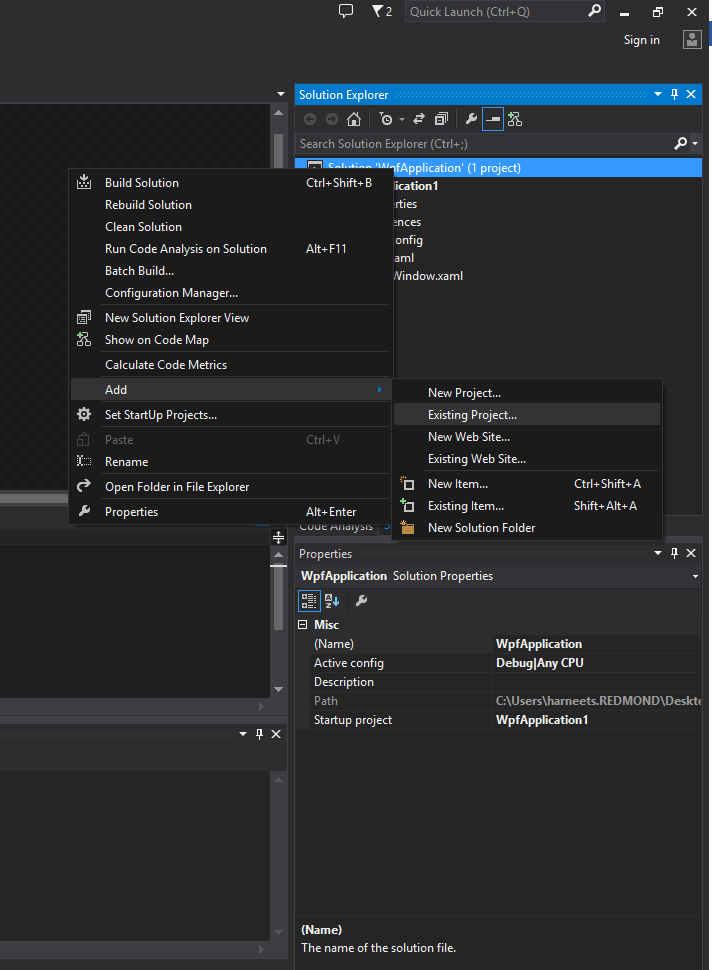
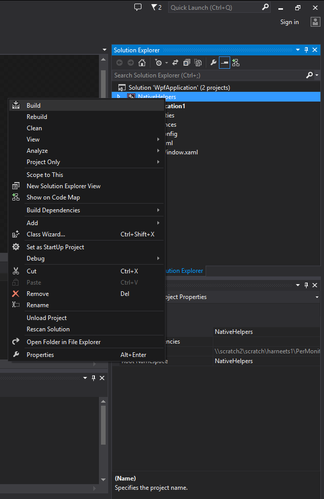

title: Developing a Per-Monitor DPI-Aware WPF Application description: Note  This page covers legacy WPF development for Windows 8.1. If you are developing WPF applications for Windows 10, please see the latest documentation on GitHub. . ms.assetid: 04a36dc7-684f-4846-aeba-970117070b4c keywords:
Important APIs
[!Note]
This page covers legacy WPF development for Windows 8.1. If you are developing WPF applications for Windows 10, please see the latest documentation on GitHub.
Â
Windows 8.1 gives developers new functionality to create desktop applications that are per-monitor DPI-aware. In order to take advantage of this functionality, a per monitor DPI-aware application must do the following:
To facilitate making a per-monitor DPI-aware application, Windows 8.1 provides the following Microsoft Win32APIs:
For more details on various DPI awareness levels supported for desktop applications in Windows 8.1 see the topic Writing DPI-Aware Desktop and Win32 Applications.
Windows Presentation Foundation (WPF) applications are by default system DPI-aware. For definitions of the different DPI awareness levels see the topic Writing DPI-Aware Desktop and Win32 Applications. The WPF graphics system uses device-independent units to enable resolution and device independence. WPF scales each device independent pixel automatically based on current system DPI. This allows WPF applications to scale automatically when the DPI of the monitor the window is on is same system DPI. However, since WPF applications are system dpi-aware, the application will be scaled by the OS when the application is moved to a monitor with a different DPI or when the slider in the control panel is used to change the DPI. Scaling in the OS may result in WPF applications to appear blurry especially when the scaling is non-integral. In order to avoid scaling WPF applications, they need to be updated to be per-monitor DPI-aware.
The Per Monitor Aware WPF sample is a sample WPF application updated to be per-monitor DPI-aware. The sample consists of two projects:
To run the sample follow the steps below:
To see the impact of changing DPI on a WPF application that is updated to be per-monitor DPI-aware using the base class in the sample, move the application window to and from displays that have different DPIs. As the window is moved between monitors, the window size and the UI scale is updated based on the DPI of the display by using WPF’s scalable graphics system, rather than being scaled by the OS. The application’s UI is rendered natively and does not appear blurry. If you don’t have two displays with different DPI, change the DPI by changing the slider in the Display control panel. Changing the slider and clicking Apply will resize the application’s window and update the UI scale automatically.
If you have an existing WPF application and wish to leverage the DPI helper project from the sample to make it DPI aware, follow these steps.
Download and unzip the Per Monitor Aware WPF sample
Start Visual Studio and select File > Open > Project/Solution
Browse to the directory which contains an existing WPF application and double-click the Visual Studio Solution (.sln) file
Right click on Solution > Add > Existing Project
In the file selection dialogue browse to the directory that contains the unzipped sample. Open to the directory named for the sample, browse to the folder "NativeHelpers", select the Visual C++ project file "NativeHelpers.vcxproj†and click OK
Right click on the project NativeHelpers and select Build. This will generate NativeHelpers.dll that will be added as a reference to the WPF Application in the next step
Add a reference to NativeHelpers.dll from your WPF Application. Expand your WPF application project, right click on References and click on Add Reference...
In the resulting dialogue, expand the Solution section. Under Projects, select NativeHelpers, and click OK
Expand your WPF application project, expand Properties, and open AssemblyInfo.cs. Make the following additions to AssemblyInfo.cs
[assembly: DisableDpiAwareness])Inherit the main WPF window class from PerMonitorDPIWindow base class
Update the .cs file of the main WPF window to inherit from the PerMonitorDPIWindow base class
using NativeHelpers;Update the .xaml file of the main WPF window to inherit from PerMonitorDPIWindow base class
xmlns:src="clr-namespace:NativeHelpers;assembly=NativeHelpers"Press F7 or use Build > Build Solution to build the sample
Press Ctrl+F5 or use Debug > Start Without Debugging to run the sample
The Per Monitor Aware WPF sample application illustrates how a WPF application can be updated to be per-monitor DPI-aware by responding to the WM_DPICHANGED window notification. In response to the window notification, the sample updates the scale transform used by WPF based on the current DPI of the monitor the window is on. The wParam of the window notification contains the new DPI in the wParam. The lParam contains a rectangle that has the size and position of the new suggested window, scaled for the new DPI.
Note:
[!Note]
Since this sample overwrites the window size and the scale transform of the root node of the WPF window, further work may be required by application developer if:
- The size of the window impacts other portions of the application like this WPF Window being hosted inside another application.
- The WPF application that is extending this class is setting some other transform on the root visual; the sample may overwrite some other transform that is being applied by the WPF application itself.
Â
In order to make an existing WPF application per-monitor DPI-aware the NativeHelpers library provides following functionality:
Marks the WPF application as per-ponitor DPI-aware: The WPF application is marked as per-monitor DPI-aware by calling SetProcessDpiAwareness for the current process. Marking the application as per-monitor DPI-aware will ensure that
Adjusts the window dimension, re-layout and re-render graphics content and select fonts based on initial DPI of the monitor the window is on: Once the application is marked as per-monitor DPI-aware, WPF will still scale the window size, graphics and font size based on the system DPI. Since, at app launch, the system DPI is not guaranteed to be the same as the DPI of the monitor the window is launched on, the library adjust these values once the window is loaded. The base class PerMonitorDPIWindow updates these in the OnLoaded() handler.
The Window size is updated by changing the Width and Height properties of the Window. The layout and size are updated by applying an appropriate scale transform to the root node of the WPF window.
void PerMonitorDPIWindow::OnLoaded(Object^ , RoutedEventArgs^ )
{
if (m_perMonitorEnabled)
{
m_source = (HwndSource^) PresentationSource::FromVisual((Visual^) this);
HwndSourceHook^ hook = gcnew HwndSourceHook(this, &PerMonitorDPIWindow::HandleMessages);
m_source->AddHook(hook);
//Calculate the DPI used by WPF.
m_wpfDPI = 96.0 * m_source->CompositionTarget->TransformToDevice.M11;
//Get the Current DPI of the monitor of the window.
m_currentDPI = NativeHelpers::PerMonitorDPIHelper::GetDpiForWindow(m_source->Handle);
//Calculate the scale factor used to modify window size, graphics and text
m_scaleFactor = m_currentDPI / m_wpfDPI;
//Update Width and Height based on the on the current DPI of the monitor
Width = Width * m_scaleFactor;
Height = Height * m_scaleFactor;
//Update graphics and text based on the current DPI of the monitor
UpdateLayoutTransform(m_scaleFactor);
}
}
void PerMonitorDPIWindow::UpdateLayoutTransform(double scaleFactor)
{
// Adjust the rendering graphics and text size by applying the scale transform to the top
level visual node of the Window
if (m_perMonitorEnabled)
{
auto child = GetVisualChild(0);
if (m_scaleFactor != 1.0)
{
ScaleTransform^ dpiScale = gcnew ScaleTransform(scaleFactor, scaleFactor);
child->SetValue(Window::LayoutTransformProperty, dpiScale);
}
else
{
child->SetValue(Window::LayoutTransformProperty, nullptr);
}
}
}
Responds to WM_DPICHANGED window notification: Update the window size, graphics and font size based on the DPI passed in the window notification. The base class PerMonitorDPIWindow handles the window notification in the HandleMessages() method.
The Window size is updated by calling SetWindowPos using the information passed in the lparam of the window message. The layout and graphics size are updated by applying an appropriate scale transform to the root node of the WPF window. The scale factor is calculated by using the DPI passed in the wparam of the window message.
IntPtr PerMonitorDPIWindow::HandleMessages(IntPtr hwnd, int msg, IntPtr wParam, IntPtr lParam, bool% )
{
double oldDpi;
switch (msg)
{
case WM_DPICHANGED:
LPRECT lprNewRect = (LPRECT)lParam.ToPointer();
SetWindowPos(static_cast<HWND>(hwnd.ToPointer()), 0, lprNewRect->left, lprNewRect-
>top, lprNewRect->right - lprNewRect->left, lprNewRect->bottom - lprNewRect->top,
SWP_NOZORDER | SWP_NOOWNERZORDER | SWP_NOACTIVATE);
oldDpi = m_currentDPI;
m_currentDPI = static_cast<int>(LOWORD(wParam.ToPointer()));
if (oldDpi != m_currentDPI)
{
OnDPIChanged();
}
break;
}
return IntPtr::Zero;
}
void PerMonitorDPIWindow::OnDPIChanged()
{
m_scaleFactor = m_currentDPI / m_wpfDPI;
UpdateLayoutTransform(m_scaleFactor);
DPIChanged(this, EventArgs::Empty);
}
void PerMonitorDPIWindow::UpdateLayoutTransform(double scaleFactor)
{
// Adjust the rendering graphics and text size by applying the scale transform to the top
level visual node of the Window
if (m_perMonitorEnabled)
{
auto child = GetVisualChild(0);
if (m_scaleFactor != 1.0)
{
ScaleTransform^ dpiScale = gcnew ScaleTransform(scaleFactor, scaleFactor);
child->SetValue(Window::LayoutTransformProperty, dpiScale);
}
else
{
child->SetValue(Window::LayoutTransformProperty, nullptr);
}
}
}
In order to update graphics content, the sample WPF application applies a scale transform to the root node of the WPF application. While this works well for content that is rendered natively by WPF (rectangle, text etc.), this implies that bitmap assets like images are scaled by WPF.
In order to avoid blurred bitmaps caused by scaling, the WPF application developer can write a custom DPI image control that selects a different asset based on the current DPI of the monitor the window is on. The image control can rely on the DPIChanged() event fired for the WPF window that consumes from the PerMonitorDPIWindow, when the DPI changes.
[!Note]
The image control should also select the right control during app launch in the Loaded() WPF window event handler.
Â
Â
Â